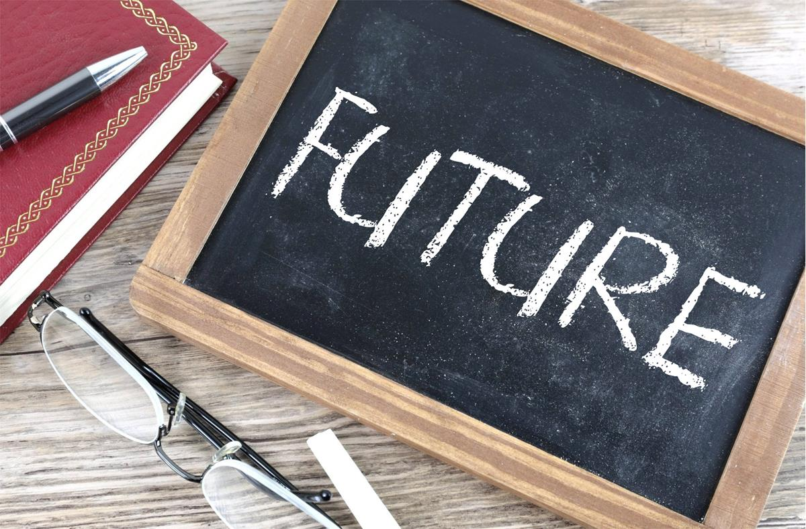

 Picpedia / CC BY-SA
(https://creativecommons.org/licenses/by-sa/4.0)
In the future I want to either become a lawyer or a doctor.
Both of these are very challenging and competitive programs,
and it is necessary that I am well prepared for the challenges
that lie in my university and professional life. I also want to
start a business, which would be my source of passive income, and
I would like to perfect my knowledge on stocks; and include that as
another passive source of income. Finally I would like to help other
people throughout my life. It is necessary that humans stay grateful
for what they have and give back to those in need. I would like to
set up a charity where people can donate their hard earned money to
specific causes and help the less fortunate.